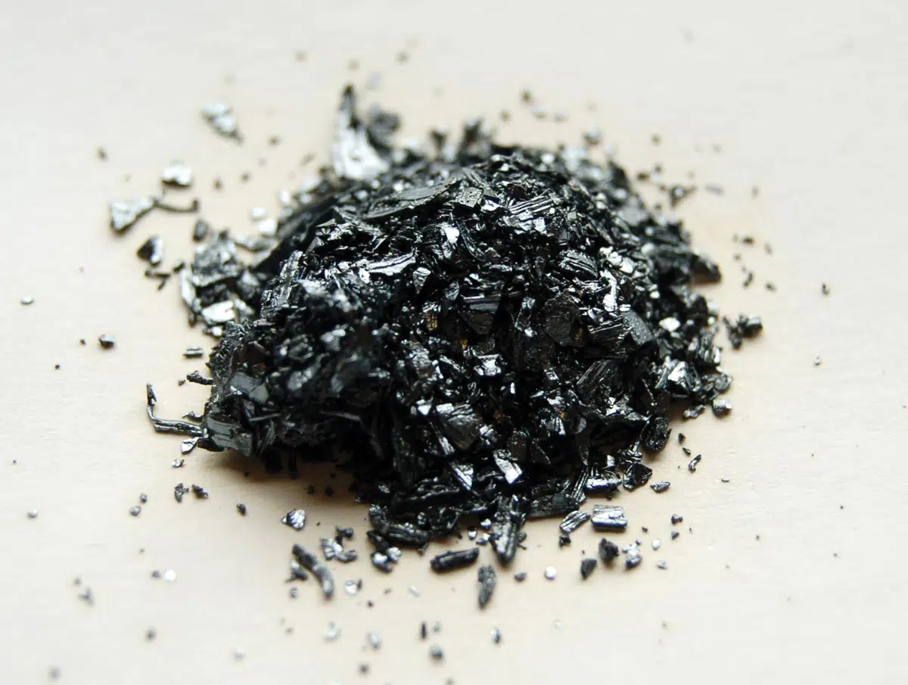

Trabalho interdisciplinar: Química, PAM e PWII
Elemento químico da tabela periódica: Iodo
Professores: Elaine e Allan
Turma: 2º DS A
1. Principais características
- Nome e símbolo: Iodo (I)
- Estado físico em temperatura ambiente: sólido
- Aparência ou coloração: sólido preto meio acinzentado, com um brilho meio metálico. Quando ele é aquecido, sublima (passa direto do sólido pro gasoso) e solta um vapor roxo/violeta bem característico
- Principais propriedades: número atômico 53, massa atômica aproximadamente 126,9 u, faz parte da família dos halogênios (grupo 17). Ponto de fusão em torno de 113,7°C e ponto de ebulição perto de 184°C. É pouco solúvel em água, mas se dissolve bem em álcool e em outros solventes orgânicos
Imagem:

Fonte: https://conhecimentocientifico.r7.com/iodo-elemento-quimico/
Acessado em 28 Set. 2026
2. História da descoberta
- Ano: 1811
- Cientista: Bernard Courtois, um químico francês
Como aconteceu: Courtois trabalhava fabricando salitre (nitrato de potássio) pra abastecer o exército de Napoleão, e usava cinzas de algas marinhas nesse processo. Em um dia de 1811 ele colocou ácido sulfúrico em excesso sem querer e reparou que saia um vapor roxo bem forte, que ao esfriar virava uns cristais escuros e meio brilhantes. Ele desconfiou que tinha achado um elemento novo, só que não tinha certeza, e acabou passando amostras pra outros cientistas conferirem, entre eles Joseph Gay-Lussac e o inglês Humphry Davy, que confirmaram se tratar de um elemento novo mesmo. Em 1813 o elemento foi batizado de "iodo", nome que vem do grego iodes, que quer dizer "cor violeta", por causa da cor do vapor que ele solta.
3. Ocorrência na natureza
O iodo, assim como os outros halogênios, não é encontrado livre na natureza - ele sempre tá combinado com outros elementos, principalmente na forma de iodetos e iodatos.
- Água do mar: contém iodeto de sódio (NaI), ainda que em proporção pequena
- Algas marinhas: acumulam bastante iodo, é uma das fontes mais ricas
- Depósitos de salitre do Chile (também chamado de caliche): contém iodato de sódio (NaIO3) e minerais como a lautarita. O Chile é hoje o maior produtor mundial de iodo
- Também aparece em compostos petrolíferos, na forma de iodeto de potássio (KI)
4. Uso no cotidiano
4.1 Alimentos - sal iodado
No Brasil é obrigatório por lei adicionar iodo ao sal de cozinha comum. Isso é feito porque o corpo precisa de iodo pra tireóide funcionar direito, e sem essa suplementação boa parte da população desenvolveria bócio (aumento da tireóide) por falta de iodo na dieta.
4.2 Medicamentos e antissépticos
A tintura de iodo (uma solução de iodo com iodeto de potássio em álcool) é usada como antisséptico pra desinfetar a pele e ferimentos. Também existem os isótopos radioativos iodo-131 e iodo-123, usados na medicina nuclear pra diagnosticar e tratar doenças da tireoide, inclusive o câncer de tireoide.
4.3 Eletrônicos
O iodo é usado dentro das lâmpadas de filamento de tungstênio (as lâmpadas halógenas), como um gás que ajuda a aumentar a vida útil do filamento.
4.4 Fotografia/indústria
O iodeto de prata (AgI) é usado em filmes fotográficos antigos e também é usado pra "semear nuvens", técnica que ajuda a provocar chuva artificial.
5. Importância ou riscos
Importância biológica: o iodo é um elemento essencial pro corpo humano, porque ele entra na composição dos hormônios da tireoide (tiroxina e tri-iodotironina), que regulam o metabolismo do corpo todo. A falta dele causa hipotireoidismo e bócio, e em criança a deficiência de iodo pode até atrapalhar o desenvolvimento físico e mental.
Toxicidade e riscos à saúde: apesar de ser essencial, o excesso de iodo também faz mal e pode causar efeitos parecidos com os da falta dele. Em quantidades bem altas (na faixa de 2 a 3 gramas do elemento puro) pode até ser fatal se ingerido. Já o iodo radioativo (como o iodo-131) é perigoso porque emite radiação ionizante, que pode se acumular na tireoide e causar câncer, mesmo sendo usado com cuidado em tratamentos médicos.
Cuidados necessários: em laboratório os vapores de iodo irritam bastante os olhos e as vias respiratórias, então precisa manusear com cuidado, de preferência com boa ventilação.
Fontes consultadas
-
Iodo - Wikipédia, a enciclopédia livre
https://pt.wikipedia.org/wiki/Iodo -
Iodo - Elemento Químico Iodo (I) - InfoEscola
https://www.infoescola.com/elementos-quimicos/iodo/ -
Iodo - CRQ-SP (Conselho Regional de Química)
https://crqsp.org.br/qv_iodo/ -
Iodo. Propriedades do elemento químico Iodo - PrePara Enem
https://www.preparaenem.com/quimica/iodo.htm